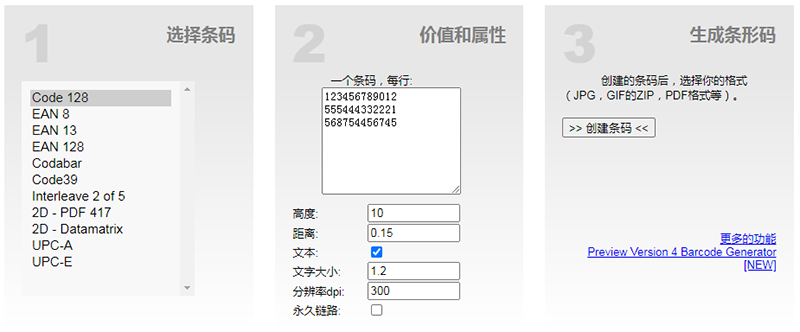

在线条码生成器
在线创建自己的条形码。你可以将其打印或保存为JPG，GIF，ZIP或PDF格式。 您的条码是免费的，并迅速生成。操作非常容易。

在步骤1下，选择要生成的条形码类型。如果不确定，请选择Code128，它被广泛使用并与（几乎）任何扫描仪兼容。
在步骤2中，输入要生成的条形码。例如，您可以在此处输入产品的EAN编号。您也可以一步输入多个条形码。
为此，请每行输入一个条形码。
您可以通过设置属性来配置条形码。您可以设置高度和宽度并配置条形码是否也应显示为文本。
在最后的步骤3中，您将生成条形码。在显示的弹出窗口中，您可以下载条形码或打印条形码（无广告）或将其导出为PDF和Excel。
条形码的生成是免费的，您也可以将生成的条形码用于商业目的。
barcode-generator
V2
消除图片背景
无需点击，即可在 5 秒钟内 100% 自动消除背景！
大约有 2000 万个更有趣的事情在等待着您去挖掘，而不是怎样去手动清除背景。
多亏了 remove.bg 的智能 AI，让您可以节省编辑时间——去做您想做的事情！
remove.bg
在线图表工具
diagrams.net是一种用于构建图表应用的开源技术，以及世界上使用最广泛的基于浏览器的最终用户绘图软件。
使用diagrams.net可以在线创建、编辑和查看图表，您甚至可以将其用作另一个图表工具创建的文件的图表查看器。
建立好的图表可以存储在您需要的地方—Google Drive、OneDrive、Github、GitLab、Dropbox或本地设备上。
diagrams.net为每个人提供免费、高质量的绘图软件！
diagrams.net
文件转换器
CloudConvert是一个在线文件转换器。我们支持几乎所有的音频、视频、文档、电子书、归档、图像、电子表格和演示格式。
要开始，请使用下面的按钮并选择要从计算机转换的文件。
CloudConvert
PDF在线工具
完全免费、易于使用、丰富的PDF处理工具，包括：合并、拆分、压缩、转换、旋转和解锁PDF文件，
以及给PDF文件添加水印的工具等。仅需几秒钟即可完成。
ilovepdf
软件开发在线工具集
此免费在线工具集，主要是收集为软件开发和其他用户使用的一些在线工具。包括语言美化和精炼，CSS预处理器，
单位转换，数据格式转换，代码验证，字符串实用程序，IP工具等。
beautifytools
OCR文字识别
PearOCR用于进行光学字符识别，也就是把图像上的文字识别出来，以便于复制，修改，检索等操作。
完全免费
市面上提供OCR的软件大部分有各种限制（识别次数或者文件大小），需要收费才能解除限制，而PearOCR的识别完全免费，没有次数和文件大小限制。
本地运算
市面上的OCR软件大部分是利用大公司的API进行识别，需要把图片上传到服务器再返回识别结果，这个过程有可能导致个人数据的泄露和滥用。
PearOCR基于自研的轻量化识别引擎，整个过程都在本地运算，不会把图片或者识别结果上传，从原理上保护数据安全。
优化排版
PearOCR的识别结果采用和原图文本相同位置的排版，便于进行文字的提取和分析
无需下载
PearOCR所有过程均在网页端完成，无需下载任何软件，点开即用
PDF导出
提供导出PDF的功能，把图片和文本都集在同一个PDF中，方便存档和对照，同时提供了不同的PDF排版选项
PearOCR